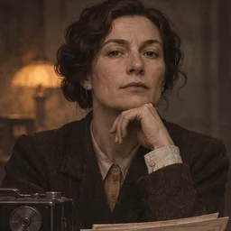
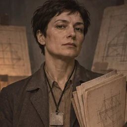
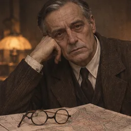
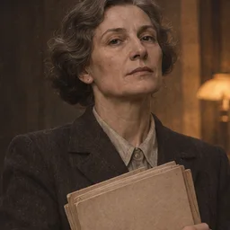

После смертельного пожара в заводской лаборатории взрослые рабочие теряют силы, работу и доверие друг к другу. Официальная сводка называет заболевание редким последствием одной аварии. Родственники просят независимую группу проверить даты: некоторые манжеты побелели задолго до огня.

Если партия изменила план
Перед чтением вступления сверьте место героев, присутствующих людей и предметы с итогом прошлого вечера. Если условия встречи отпали, сыграйте последствия там, где находится партия. Событие по расписанию может произойти за кадром. Герои узнают о нём от тех, кто был на месте.
Вечер 6. Если свидетели запретили отдавать оригиналы
Отметьте хранителя каждого экземпляра. Спросите, кто разрешает сверить подпись на месте. В последней сцене покажите, кто подтвердил получение предупреждения и какие имена остались за пределами публичной папки.
Группа отказалась от задания
Отказываемся расследовать пожар от имени заказчика. Списки больных не отдаём. Предложим независимой палате обезличенные сведения смен. Передаём палате обезличенную выборку смен. Палата принимает материалы в пределах согласия. Семьи сохраняют имена, вопрос о производстве остаётся открытым.
Игроки раскрыли тайну раньше
Сверим календарь смен с заключением независимой палаты и проверим дату вручения предупреждения. Доступные свидетельства — Календарь трёх смен, Результат независимой палаты. И жалобы, и совпадающий след Л-4 появились до пожара. Старую датировку можно опровергнуть независимо от имён работников. Сопоставляем до-пожарные даты в двух независимых записях. Отделяем подтверждённую связь с П-17 от знания конкретного начальника. Работники решают, кому дать свидетельство о вручении.
Партия уступила поле
Нас оттеснили от посетительской черты, ящик остался за дверью. Берём внешнюю расписку только за фактически принятую копию. Подаём копии и просим расписку внешнего хранения. Пока ящик не принят, полной описи в деле нет.
За десять минут до первой игры
- Откройте первый вечер, прочитайте правду мира и участников. Остальные вечера — планы, их исход решают игроки.
- Выберите пакет под фактическое число игроков. Первые три героя — готовое ядро; остальные добавляются по порядку. Возраст игрока не определяет героя.
- Согласуйте темы, длительность и сигнал паузы. Передайте игрокам только players.html; раздатки выдавайте по отдельности после указанного открытия.
- Откройте Мастерскую проекта, создайте личный черновик и импортируйте выбранный JSON через загрузку пакета. Проверьте состав и начало в предпросмотре. Запуск кампании подтверждает ведущий штатным действием.
- Откройте иллюстрацию завязки отдельно. Портреты героев входят в файл для игроков, портреты встречных — в книгу ведущего. Тактические схемы доступны в разделе карт.
Формат и темы
8 вечеров; 180 минут: 15 минут вступления и повторения, три сцены по 45 минут, перерыв 15 минут и завершение 15 минут.
Гальмер — вымышленный промышленный город эпохи электрических трамваев, пишущих машинок и стеклянных фотопластинок. Завод «Белая линия» выпускает технические пластины. Все вещества, заболевания, учреждения и процедуры доказательств вымышлены. Канонические классы fighter, rogue, cleric и wizard уровня 3 — механическая абстракция человеческих профессий; сверхъестественные способности выключены по умолчанию. Изменение этой условности требует явного согласия всей группы. Медицина, право и огнестрельное оружие не симулируются; проверки — игровые решения ведущего, не профессиональные советы.
Сдержанный нуар о труде, доверии к цифрам, заботе без обещаний и цене своевременного свидетельства. Дождь размывает уголь на мостовой, но не даты в чужом карманном календаре.
- Осознанное продолжение опасной работы и рассеянная ответственность
- Индивидуальный опыт против удобной сводной цифры
- Горе взрослых родственников, стыд соучастия и неполная правда
- Право на заработок, отказ от опасной работы и последствия огласки
Границы
- Все действующие лица старше 21 года. Несовершеннолетних нет в сценах и материалах дела.
- Без сексуальных сцен, сексуального насилия, подробностей ожогов, вскрытий и телесных повреждений. Погибший показан через вещи и воспоминания.
- До игры отдельно согласовать болезнь, утрату трудоспособности, смерть близкого и давление работодателя. Любую из этих тем можно перенести за кадр без потери улик.
- Не просить игроков рассказывать о собственном здоровье, семье или работе. Пауза, письменное решение и пропуск сцены доступны без объяснения.
- Вымышленные образцы и симптомы не дают рецептов ядов, инструкций опасного производства, диагностики или лечения. Результаты анализа выдаются как готовые игровые документы.
- Заболевший персонаж сохраняет право решать, кому рассказывать о своём состоянии. Согласие на личные сведения обсуждается отдельно от желания расследовать.
Люди за столом
- Ведущий в начале каждого вечера напоминает границы; за столом присутствуют 3–8 игроков плюс ведущий. Первые три героя составляют самостоятельную группу: опрос, хронология и защита свидетелей доступны каждому.
- Перед каждой сценой смените первого говорящего. Сначала по одному короткому предложению от желающих, затем общее решение; можно передать слово или написать свой выбор.
- При разделении назначьте общий вопрос и точку встречи. Разрешайте параллельные действия блоками не более десяти минут и возвращайте всех к общему столу до выдачи итогового документа.
- В группе 6–8 человек создайте пары: вопросы свидетелю, проверка дат, фиксация согласия и оценка издержек. Каждая пара приносит факт и сомнение; один игрок не получает постоянной роли докладчика.
- Отсутствующий герой остаётся в комнате взаимопомощи. Его публичные заметки доступны с согласия игрока; личные решения, секреты и необратимые обещания за него не делают.
- Базовые улики выдавайте за описанное доступное действие. Проверка меняет время, доверие или качество оформления, но не существование истины. Ошибочную версию записывайте отдельно от фактов и предлагайте проверяемое опровержение.
- Если сцена болезни слишком тяжела, используйте карточку свидетельства и представителя по выбору NPC. Ни убедительность переживания, ни медицинский словарь игрока не заменяют доказательств.
- Все будущие события условны. Ведущий заранее объявляет срок решения комиссии, но не запускает автоматические таймеры; по завершении вечера группа выбирает следующий шаг.
Масштабирование группы
3 игроков
Первые три героя ведут все линии. На сцену — один общий вопрос, один проверяющий даты и один собеседник; роли вращаются. Параллельные эпизоды идут короткими последовательными кадрами. Улики дополнительных героев доступны всей группе.
4 игроков
Добавьте роль хранителя согласий и копий. После двух выступлений передавайте инициативу молчавшему. В развилках разделяйтесь только на две пары и сходитесь у стола взаимопомощи.
5 игроков
Одна тройка беседует, пара проверяет хронологию. В следующей сцене поменяйте состав; пятый голос получает первое слово о цене решения. Не добавляйте обязательных свидетелей.
6 игроков
Три пары ведут инженерную, медицинскую и рабочую линии. По десять минут на ход пары, затем сверка на общей шкале времени; пары меняются линиями во второй половине вечера.
7 игроков
Три пары и сменяемый связной. Связной задаёт проверочный вопрос и выбирает, какие расхождения вынести всем, но не решает за отсутствующих. Каждая сцена заканчивается кругом из семи возможных голосов.
8 игроков
Четыре пары: три линии доказательств и условия защиты работников. Через сцену меняйте задачу каждой пары. На финальном обсуждении сначала восемь письменных приоритетов, затем два круга предложений; меньшинство сохраняет собственный эпилог.
Первое чтение вслух
В комнате взаимопомощи сушатся несколько пальто. На столе лежат рабочая манжета, больничный талон и газета с чёрной рамкой вокруг имени погибшего лаборанта. Женщина напротив вас прижимает к столу дрожащую ладонь: «Они говорят — после пожара. Найдите, с какого дня это слово стало удобным». За стеной звенит трамвай. До утренней смены ещё далеко.
Правда мира · только ведущему
- Опасное воздействие связано с вымышленной сухой стадией П-17 производства пластин. Её ввели за одиннадцать недель до начала расследования; первые зафиксированные нарушения появились через три недели. Пожар произошёл лишь шесть дней назад и не создал первоначального воздействия. Ни реальные вещества, ни диагностические критерии здесь не подразумеваются.
- Директор Варвара Золина и начальник производства Павел Рутков получили письменное предупреждение инженера Веры Невской за пять недель до расследования, обсудили его и сознательно сохранили стадию П-17 ради выполнения контракта. Золина рассчитывала перенести прекращение производства до расчёта с заказчиком; Рутков — получить повышение. Это фиксированные виновники решения, а не ответ на догадки игроков.
- По распоряжению Золиной статистик Инга Сурина исключила отсутствующих по болезни вместе с их жалобами из числителя и знаменателя, затем добавила работников других участков без записанных жалоб. Было восемь обратившихся из двенадцати на П-17; исключили шесть отсутствующих с обращениями и добавили сорок других работников — стало два из сорока шести. Индивидуальные истории исчезли в удобном итоге. Инга знает о подмене выборки, но не видела сам процесс и не знает происхождения пожара.
- Лаборант Северьян Караев, 46 лет, погиб при попытке сохранить контрольные образцы и переснять подлинные карточки перед назначенным уничтожением. Случайное возгорание возникло во время этой попытки; он не поджигал завод ради сокрытия болезни. Его намерение доказывают оставленные поручения и вынесенные до пожара материалы. Точную техническую причину и момент возгорания никто из свидетелей не видел.
- Есть три самостоятельных пути доказать осведомлённость руководителей: инженерный — предупреждение, регистрация вручения и решение продолжать; медицинско-статистический — ранние карточки, правила исключения и визированная сводка; рабочий — сменные записи, квитанция независимого исследования и отметки руководителей о полученном результате. Ни один врач или свидетель не обладает всеми тремя цепочками.
- Независимые сохранённые образцы позволяют подтвердить совпадение следов на П-17 с материалами, взятыми до пожара, только в рамках вымышленных правил этой истории. Они не обещают индивидуальный прогноз или лечение. Без этих образцов даты и осведомлённость всё ещё можно доказать документами и свидетельствами, но вопрос конкретного воздействия останется уже.
- Золина согласится обсуждать прекращение П-17 с временной оплатой простоя лишь при сохранённой независимой копии дела и готовности работников подписать условия без отказа от свидетельств. Немедленная остановка также возможна через городскую комиссию. Ни один исход не гарантирует выздоровление, сохранение всех мест или наказание начальства; это зависит от действий группы и сохранённых доказательств.
Досье дела · только ведущему
Кто и когда знал об опасности П-17, почему процесс продолжался и какие независимые материалы пережили попытку свести все жалобы к последнему пожару?
Виновник: Варвара Золина.
Золина хотела выполнить контракт до расчёта и избежать немедленного прекращения выручки, сохранив право самой определять серьёзность сообщений. Рутков сознательно поддержал решение ради обещанного повышения. Эти мотивы объясняют выбор, но не снимают ответственности и не делают болезнь необходимой ценой рабочих мест.
Человеческое управленческое преступление: продолжение вымышленной стадии П-17 после нескольких предупреждений, изменение состава медицинской сводки и продвижение удобной версии о пожаре как начале проблемы. Устройство производства, состав вещества, рецептуры и способы нанесения вреда не описываются. Случайный пожар возник во время попытки Караева спасти материалы; он не был источником первоначального воздействия.
Что произошло до начала игры
- День −77. Запущена стадия П-17; это зафиксировано в сменном календаре и инженерных документах. Свидетели: Вера Невская, Павел Рутков, Нелли Векшина.
- День −56. Нелли сделала первую запись о трудностях в работе. Это личное свидетельство о состоянии, не диагноз или доказательство причины. Свидетели: Нелли Векшина.
- День −52. Росанов зарегистрировал раннее обращение работника П-17 и вопрос об условиях участка. Дата подтверждается архивом. Свидетели: Даниил Росанов, Инга Сурина.
- Дни −41 и −40. На рабочем собрании решили передать материалы в независимую палату; Караев доставил образцы, палата зарегистрировала приём. Два события связаны номером отправления. Свидетели: Антон Белов, Нелли Векшина, Северьян Караев, Сара Лем.
- Дни −39 и −37. Палата выдала ограниченное заключение Л-4 с требованием приостановки. Золина и Рутков получили его и вернули подписанный ответ: продолжить смены до расчёта. Подписи и даты — факты; их внутренние оправдания не выводятся из одной подписи. Свидетели: Сара Лем, Варвара Золина, Павел Рутков, Григорий Устов.
- Дни −35 и −34. Невская направила отдельное инженерное предупреждение; контора зарегистрировала вручение обоим руководителям. Свидетели: Вера Невская, Григорий Устов, Варвара Золина, Павел Рутков.
- День −32. Золина и Рутков подписали распоряжение продолжать П-17, прямо сославшись на полученное инженерное предупреждение. Свидетели: Варвара Золина, Павел Рутков.
- Дни −28 и −27. Золина распорядилась изменить выборку, Рутков ознакомился, Инга исполнила. Два руководителя визировали сводку с замечанием об исключённых ранних обращениях и сохранении производственного плана. Свидетели: Варвара Золина, Павел Рутков, Инга Сурина.
- День −7. Караев попросил брата сохранить ящик и копии перед списанием черновиков. Записка подтверждает намерение; мысль Леонида, что он мог предотвратить гибель, остаётся недоказанным чувством. Свидетели: Северьян Караев, Леонид Караев.
- День −6, утро. Караев оформил внешнюю передачу контрольного ящика; время записано в журнале независимой палаты. Свидетели: Северьян Караев, Сара Лем.
- День −6, вечер. Во время сохранения оставшихся копий в лаборатории возник случайный пожар, Караев погиб. Это фиксированная истина ведущего. Точный механизм возгорания и его момент не имеют надёжного очевидца и не могут стать уверенным показанием живого NPC. Свидетели: нет.
- День −5. Заводская заметка представила пожар началом жалоб. Первичная муниципальная опись такой причинной связи не устанавливает. Свидетели: Варвара Золина, Павел Рутков, Леонид Караев.
Независимые пути доказательства
Предупреждение — вручение — решение
Содержание требования приостановки, независимая регистрация получения обоими начальниками и последующее распоряжение с прямой ссылкой образуют полную цепь сознательного продолжения. Сцены третьего вечера дают первые два звена; первый эпизод пятого — третье. Медицинские карты, образцы и признания руководителей для этой цепи не обязательны. Она доказывает сознательный риск, но не диагноз каждого работника.
Улики: Предупреждение Веры; Две подписи о вручении; Распоряжение после предупреждения.
Ранняя запись — изменённая выборка — виза
Архив устанавливает ранние обращения; письменное указание признаёт их концентрацию на П-17 и исключает часть данных; визированный полный экземпляр сводки связывает знание о скрытой группе с продолжением плана. Второй вечер открывает первые два звена, второй эпизод пятого даёт сводку. Калька «Строки, исчезнувшие на время болезни» делает подмену наглядной, но при её утрате журнал и правила позволяют восстановить расчёт. Врач не обязан устанавливать вещество или давать полное объяснение дела.
Улики: Ранняя амбулаторная запись; Указание о составе выборки; Виза под удобной сводкой.
Сменная память — внешний результат — возвращённый ответ
Рабочая книжка указывает на независимое отправление до пожара; заключение подтверждает содержание предупреждения по его номеру; внешний ответ с подписями обоих руководителей прямо сохраняет смены. Книжку получают в первом вечере, заключение и ответ — в третьей сцене четвёртого. Этот путь обходится без завода, инженерного письма и медицинского архива. Ограничение результата палаты остаётся видимым: совпадение вымышленного следа не даёт индивидуального прогноза.
Улики: Книжка подмен Антона; Результат независимой палаты; Возвращённый сопроводительный лист.
Подозреваемые
Варвара Золина
Сохранить выручку и контроль над оглаской до завершения контракта.
Три независимые цепочки показывают получение предупреждения, знание о ранних проблемах и сознательное продолжение; она же подписала правило выборки.
Слова «я доверяла специалистам», отсутствие точного названия вещества и отсутствие приказа устроить пожар недостаточны для оправдания сознательного продолжения. При этом документы действительно не доказывают, что она заказала пожар: такое лишнее обвинение следует снять.
Павел Рутков
Повышение за выполнение плана и сохранение начальственного положения.
Личные подписи о получении и на решениях продолжать исключают версию полной неосведомлённости.
Подчинённое положение не отменяет зафиксированного выбора. Однако его подпись ознакомления с правилом выборки сама по себе не доказывает, что он придумал подмену; авторство распоряжения принадлежит Золиной.
Инга Сурина
Сохранить место и спрятать собственную роль в красивой сводке.
Она подготовила чистовой итог и сначала не рассказала об исключённых строках.
Письменное правило и визы отделяют исполнение подмены от решения продолжать производство. Инга несёт ответственность за собственное действие, но не была тайным распорядителем П-17 и не имела данных о причине пожара.
Северьян Караев
Газетная версия намекает, что лаборант уничтожил следы своей ошибки.
Он остался в корпусе после окончания смены, а огонь повредил часть архива.
Допожарная внешняя передача, записка о сохранении и опись вынесенных копий противоречат версии уничтожения. Они подтверждают цель сохранения, хотя не позволяют восстановить каждую минуту случайного пожара.
Даниил Росанов
Скрыть позднее распознавание общего характера обращений.
Ранние карты не объединились в официальное предупреждение сразу; врач испытывает стыд и неохотно говорит о задержке.
Исходные даты и сохранённый запрос об условиях опровергают сознательное создание поздних карт. Его промедление остаётся предметом оценки, но правило подмены и производственные решения подписаны другими людьми.
Проверяемые ложные версии
Все проблемы начались из-за дыма лабораторного пожара.
Это опровергается сразу несколькими допожарными датами; ни вид манжеты, ни одна жалоба отдельно не объясняют вещество. Требовать совпадения трёх независимых дат полезно, но обязательного броска для их получения нет.
Проверка: Календарь трёх смен; Ранняя амбулаторная запись; Результат независимой палаты.
Караев намеренно сжёг архив, скрывая собственную вину.
Его записка и внешняя передача направлены на сохранение материалов. Первичная пожарная опись не поддерживает газетное утверждение о поджоге. Группа может снять обвинение, не притворяясь, что точно знает механизм возгорания.
Проверка: Последняя просьба лаборанта; Ящик, вынесенный до огня; Опись пожарного приёма; Журнал внешнего хранения.
Два обращения из сорока шести показывают, что рабочие преувеличили масштаб проблемы.
Это результат исключения шести обращавшихся вместе с их строками и добавления сорока других работников. Возврат к исходной группе даёт восемь из двенадцати; он доказывает несовместимость сводок, а не универсальное медицинское заключение.
Проверка: Строки, исчезнувшие на время болезни; Указание о составе выборки; Ранняя амбулаторная запись.
Если расследование зашло в тупик
- При ложном обвинении Караева Леонид прекращает беседы, а часть работников отказывается от публичного имени. Записка остаётся доступной через комиссию; публичное исправление и возврат контроля над цитатами могут восстановить рабочее сотрудничество. Прощение не назначается наградой за бросок.
- При потере одного документа используйте его конкретную внешнюю копию из fallback; при потере целой цепочки две другие остаются самостоятельными. Если утеряны образцы, факт прежнего предупреждения доказывается документами, но прямую проверку сохранившегося материала нельзя объявлять состоявшейся.
- При отказе Инги, Веры или Антона от разговора запрашивайте документ по номеру, берите добровольную ограниченную выписку либо выбирайте другую цепь. Нельзя вынуждать NPC раскрывать личную информацию проверкой Убеждения.
- При неудаче на заседании Тамара перечисляет точный пробел: происхождение, копия или согласие. Группа подаёт дополнение либо сужает утверждение. Временное прекращение риска обсуждается отдельно от окончательной персональной ответственности.
- Если переговоры о содержании сорвались, остаются независимое хранение дела, ходатайство об остановке и добровольная взаимопомощь. Ведущий не награждает продолжение опасной стадии гарантированным заработком и не обещает быстрое лечение за правильное моральное решение.
Восемь вечеров
- 1. Дата на белой манжете — Принять независимое поручение, установить допожарную хронологию и выбрать правила обращения с чужими историями.
- 2. Люди за пределами итога — Проверить даты обращений и разобрать, как изменение выборки превратило тревожную группу в спокойную цифру.
- 3. Вручено лично — Отделить отправленное предупреждение от доказанного вручения и проверить происхождение обвинений погибшего.
- 4. Ящик до пожара — Восстановить попытку сохранения материалов и перевести расследование от поиска вещества к доказательству осведомлённости руководителей.
- 5. Подписи после предупреждения — Завершить доступные независимые цепочки и сформулировать обвинение без недоказанных медицинских и пожарных утверждений.
- 6. Оригиналы остаются снаружи — Сохранить независимые образцы и добровольные показания так, чтобы допустимость материалов не зависела от единственного хранителя.
- 7. Цена тихих машин — Выработать решение об остановке с честно названной ценой и добровольным участием работников, не обменяв свидетельства на содержание.
- 8. Руки вне папки — Предъявить сохранённую цепь доказательств, защитить независимые материалы и выбрать исполнимое решение, затем прожить его несовпадающие человеческие последствия.
Места
Гальмер
Промышленный город на невысоких берегах эстуария. Дожди здесь длиннее газетных заголовков, а смены делят сутки точнее часов.
Комната взаимопомощи
Нанятая взрослыми работниками комната над переплётной мастерской: большой стол, чайник и доска для объявлений. Здесь можно встречаться без заводского пропуска.
Участок П-17 завода «Белая линия»
Закрытый производственный зал с высоким остеклением, проходной и отдельной комнатой сменных записей. Посетителей сопровождают по разрешённой галерее.
Опечатанная лаборатория
Невысокий корпус с закопчённым окном и муниципальной пломбой. Временный стол приёма имущества стоит снаружи под навесом.
Амбулатория на Кленовой
Вестибюль с номерками, закрытый архив и отдельная комната бесед. По коридору катят тележку с картами в картонных обложках.
Дом сменных собраний
Бывшая столовая, которую взрослые работники снимают для собраний. На стене остался деревянный щит с крючками для жетонов.
Контора регистрации отправлений
Городская контора, где письма и посылки получают номер, дату и подпись получателя. За стойкой стоят тяжёлые переплетённые реестры.
Независимая пробная палата
Маленькая договорная лаборатория с приёмным окном и комнатой свидетелей. Посетителям выдают письменные заключения без доступа к рабочим процедурам.
Дирекция «Белой линии»
Тихий административный корпус рядом с заводом. На столе секретаря часы с недельным календарём, на стене — образцы готовых пластин.
Зал городской трудовой комиссии
Зал с длинными скамьями, столом регистратора и боковой комнатой для закрытых свидетельств. Порядок выступлений вывешивают у двери.
Нелли Векшина

42 лет. Льняная манжета под тёмным рукавом, ровный голос и заранее записанные вопросы. Работница участка П-17, участница комнаты взаимопомощи и одна из заявительниц.
Место: Комната взаимопомощи
Намерение
Чтобы её рассказ проверили, а дальнейшую работу обсуждали с ней, а не за неё.
Собственные знания
- Записывала изменения самочувствия ещё до пожара.
- В её смене несколько взрослых коллег жаловались на похожие трудности.
- Караев просил сверить дату одной её записи, но не объяснил зачем.
Секрет или личное убеждение
Скрывала несколько ранних эпизодов слабости, опасаясь перевода без оплаты; сохранила личный календарь и теперь стыдится своего молчания.
Граница и раскрытие
Не разрешает называть себя больной на публичном собрании без отдельного согласия. Отказывается от демонстрации симптомов.
Даёт календарь после обещания вернуть оригинал и согласования имён в копии. Если не доверяет героям, передаёт обезличенные даты через амбулаторию; это не требует проверки.
Вера Невская

39 лет. Короткая стрижка, папка чертежей и значок допуска на простом шнурке. Инженер по качеству, подписывавшая технические замечания к стадии П-17.
Место: Участок П-17 завода «Белая линия»
Намерение
Сохранить точную формулировку предупреждения и не приписывать себе знаний о чужих заболеваниях.
Собственные знания
- Отправила руководству предупреждение за пять недель до расследования.
- Стадия П-17 работала после отправки предупреждения.
- Не присутствовала при чтении письма директором и не знает, как начался пожар.
Секрет или личное убеждение
После своего предупреждения продолжала подписывать качество готовых пластин, убеждая себя, что качество изделия и условия труда — разные вопросы.
Граница и раскрытие
Не даст инструкции по процессу и не станет объявлять медицинскую причину. Требует отделять её подписи от подписей руководства.
Выдаёт собственную копию предупреждения при просьбе сверить дату и адресатов. При отказе говорить указывает номер официально зарегистрированного отправления; содержание доступно в регистрационном приложении.
Инга Сурина

34 лет. Тонкая цепочка для ключа архива, синие полосы копировальной бумаги на пальцах. Статистик, готовящая заводскую сводку для городской амбулатории.
Место: Амбулатория на Кленовой
Намерение
Сохранить работу и признать ровно ту часть подмены, которую совершила сама.
Собственные знания
- Какие строки исключили из сводки и какое распоряжение это потребовало.
- Кто визировал готовый документ.
- Индивидуальные даты в архиве были раньше пожара; часть личных обстоятельств пациентов ей неизвестна.
Секрет или личное убеждение
Исполнила письменное указание изменить выборку и оставила у себя рабочую кальку. Не знает, чем именно были вызваны жалобы, и не видела пожара.
Граница и раскрытие
Не отдаёт чужие имена без согласия и не принимает обещаний автоматического освобождения от ответственности.
Показывает правило выборки и кальку, если ей предлагают записать границы участия. При отказе говорить те же документы доступны по номеру приложения к сводке через комиссию.
Даниил Росанов

58 лет. Усталое лицо, чистый воротник, очки на открытой карте при каждом разговоре. Врач амбулатории, принимавший часть работников завода.
Место: Амбулатория на Кленовой
Намерение
Защитить пациентов и исправить собственное слишком позднее письменное обращение.
Собственные знания
- Даты своих приёмов и записанные пациентами жалобы.
- Он отправил вопрос о рабочих условиях, но не получил производственных данных.
- Он не определял вещество и не знает, читала ли директор каждую карту.
Секрет или личное убеждение
Первоначально принимал жалобы по отдельности и недооценил общую хронологию. Его вина — промедление, а не тайное знание состава вещества.
Граница и раскрытие
Не обсуждает прогноз конкретного человека с посторонними; никаких процедур или лечебных рекомендаций за игровым столом.
С согласия пациентов даёт заверенные даты и формулировки своих сомнений. Без личного согласия выдаёт только обезличенную временную последовательность, достаточную для сопоставления с пожаром.
Варвара Золина

53 лет. Тёмный костюм без украшений, расписание приёмов и стакан остывшей воды. Директор «Белой линии», публично обещавшая выяснить последствия лабораторной аварии.
Место: Дирекция «Белой линии»
Намерение
Довести контракт до расчёта и удержать контроль над тем, что считается доказанным.
Собственные знания
- Получала предупреждения до пожара и визировала продолжение П-17.
- Сводка скрывает отдельные ранние случаи.
- Выплата за простой возможна за счёт свободного заводского резерва лишь на ограниченный срок.
Секрет или личное убеждение
Сознательно разрешила продолжать П-17 после независимого результата и предупреждения Веры; распорядилась изменить сводку. Не заказывала пожар и не знает его точной причины.
Граница и раскрытие
Не сознаётся ради красивой развязки. Обсуждает условия, когда понимает, что изъятие единственной папки уже ничего не исправит.
Её осведомлённость устанавливают документы и подписи независимо от ответов. На конкретную датированную копию она отвечает ограниченным признанием получения, оспаривая вывод об ответственности.
Павел Рутков

45 лет. Заводское пальто, отметки мелом на дощечке смен и привычка проверять часы собеседника. Начальник производства, отвечающий за исполнение сменного плана.
Место: Участок П-17 завода «Белая линия»
Намерение
Сохранить должность, представив себя исполнителем без возможности остановки.
Собственные знания
- Когда началась П-17 и какие смены продолжали её после предупреждения.
- Он подписал получение результата и распоряжение о продолжении.
- Золина поручила ему подготовить ответ комиссии, но он не знает всех медицинских карт.
Секрет или личное убеждение
Читал предупреждения, поддержал продолжение процесса и лично утвердил ещё три недели смен. Возможность остановить участок у него была; обещанное повышение мотивировало промедление.
Граница и раскрытие
Не допускает игроков к оборудованию. Может отказать в беседе, но не превращает любой вопрос в драку.
Сравнение его распоряжения с журналом смен лишает силы версию простого незнания. Если он отказывается отвечать, те же даты подтверждает экземпляр распоряжения в конторе регистрации.
Григорий Устов

61 лет. Нарукавники, квадратная лупа и совершенно сухая промокательная бумага. Регистратор отправлений, заверяющий вручение заводских и частных писем.
Место: Контора регистрации отправлений
Намерение
Чтобы его запись использовали только для подтверждения передачи, а не как догадку о содержании чужой головы.
Собственные знания
- Номера, даты, описания вложений и подписи получателей в своём реестре.
- Один сопроводительный лист вернули с ответом дирекции.
- Он не присутствовал на заводских совещаниях и не может поставить диагноз.
Секрет или личное убеждение
Замечал просьбы заводской конторы менять описание вложений, но отказал лишь письменно и никому больше не рассказал.
Граница и раскрытие
Не отдаёт переплёт и чужую переписку целиком; делает относящуюся к делу заверенную выписку.
По номеру отправления или имени отправителя позволяет сверить строки под наблюдением. Ошибка номера стоит времени, но поиск по неделе и адресату всё равно находит нужную запись.
Сара Лем

48 лет. Простой халат без знаков завода, журнал приёма с широкими полями. Исследовательница независимой пробной палаты, отвечающая за принятие и описание образцов.
Место: Независимая пробная палата
Намерение
Сохранить проверяемую цепочку хранения и не дать превратить ограниченный результат в обещание лечения.
Собственные знания
- Когда приняли образцы Караева и какие условные метки совпали в вымышленном анализе.
- В палате хранится экземпляр заключения и возвращённого сопроводительного листа.
- Она не знает индивидуальных медицинских исходов и не видела принятия производственного решения.
Секрет или личное убеждение
Выдала тревожное заключение до пожара, но приняла заводской ответ о внутреннем рассмотрении и не добилась внешней проверки.
Граница и раскрытие
Не раскрывает реальную методику и не называет вещество из действительного мира. Не обещает, что образец доказывает состояние каждого человека.
Показывает ограниченный результат вместе с журналом приёма по просьбе сверить происхождение. Если спорят с её авторитетом, предлагает письменные первичные номера и наблюдаемую сверку, а не обязательное доверие к себе.
Леонид Караев

41 лет. Куртка переплётчика, маленькая коробка для возвращаемых вещей и красные от недосыпа глаза. Брат погибшего лаборанта, получающий личные вещи по описи.
Место: Опечатанная лаборатория
Намерение
Узнать, что делал брат, и прекратить разговоры о его виновности без подмены правды утешением.
Собственные знания
- Точное содержание последней записки брата.
- Какие вещи вынесли до пожара и какие вернули после.
- Он не был внутри лаборатории и не видел возгорания.
Секрет или личное убеждение
Получил просьбу забрать коробку за день до пожара, но отложил встречу. Считает, что мог спасти брата; это его чувство, а не установленный факт.
Граница и раскрытие
Отказывается от инсценировки смерти и не терпит просьбы публично простить руководство.
Передаёт записку при согласии различать намерение сохранить материалы и точную причину пожара. При конфликте оставляет её комиссии, откуда доступна копия без новой беседы.
Антон Белов
36 лет. Вязаный жилет под рабочим пиджаком, карманная книжка с продавленной обложкой. Рабочий вечерней смены и добровольный составитель расписания подмен.
Место: Дом сменных собраний
Намерение
Остановить опасную работу, не оставив соседей по смене без средств на ближайший месяц.
Собственные знания
- Кто менял смены и в какие даты появились просьбы о подмене.
- Он присутствовал на рабочем собрании до пожара и видел возвращённую квитанцию.
- Он не читал технических расчётов и не знает намерений директора.
Секрет или личное убеждение
Раньше называл жалобы коллег преувеличением и теперь боится, что его записи прочитают как свидетельство равнодушия.
Граница и раскрытие
Не подписывает документ от лица всех работников и не называет согласие большинства разрешением раскрыть чужую карту.
Даёт книжку, если сохранить и неудобные для него реплики, и исправления. Если боится выступать, подписывает ограниченную выписку о датах подмен без оценки здоровья коллег.
Тамара Сольт

57 лет. Городской служебный жакет, папка с пустыми бланками и негромкая манера говорить. Регистратор и докладчица городской трудовой комиссии.
Место: Зал городской трудовой комиссии
Намерение
Получить проверяемое дело и исполнимое временное решение, не заменяя расследование впечатлением от выступления.
Собственные знания
- Вымышленные правила приёма материалов: происхождение, сохранённая копия, добровольность и границы свидетельства.
- Комиссия может приостановить П-17 на время рассмотрения при наличии подтверждённого текущего риска.
- Она не знает содержания ещё не переданных доказательств и не обещает исход дела.
Секрет или личное убеждение
Комиссия раньше принимала заводские сводки без разложения на группы; Тамара понимает, что это касается и её профессиональной ответственности.
Граница и раскрытие
Не принимает чужую личную карту без согласия и не выдаёт предварительный приём за установление вины.
Заранее сообщает одинаковые требования обеим сторонам и позволяет исправить недостающую отметку через дополнительную запись. Потеря формы не меняет установленную историческую истину.
Северьян Караев

46 лет. На прижизненном служебном портрете — взрослый мужчина в лабораторном халате и круглых очках. Лаборант, погибший при недавнем пожаре. В настоящем времени появляется только через документы и чужие воспоминания.
Место: Опечатанная лаборатория
Намерение
При жизни хотел сохранить проверяемые материалы и передать их за пределы заводской дирекции.
Собственные знания
- При жизни знал номера собранных им образцов и даты их передачи в независимую палату.
- Знал о предстоящем уничтожении черновых карточек.
- Не знал будущего исхода расследования и не оставил всеведущего завещания.
Секрет или личное убеждение
Перед гибелью пытался спасти образцы и копии карточек от назначенного уничтожения. Это установленное прошлое намерение; точный момент случайного возгорания не описан достоверным свидетелем.
Граница и раскрытие
Никакого разговора с умершим, видения, реконструкции мыслей или обязательного осмотра тела. Воспоминание сообщает только опыт живого рассказчика.
Его намерение подтверждается запиской, внешним журналом и описью вынесенного ящика. Каждый документ доступен без попытки говорить с погибшим; ни один не даёт ответа о всех действиях руководства.
Возможные финалы
Красная пломба
Условия: Группа сохраняет независимую копию хотя бы одной полной цепочки осведомлённости, передаёт её комиссии с согласованными свидетельствами и требует немедленного прекращения П-17.
Комиссия может приостановить стадию П-17 до рассмотрения, а независимые материалы остаются вне завода. Игроки выбирают, кто выступит публично и кто останется под защитой. Дело о личной ответственности продолжается после эпилога.
Цена: Первая выплата за простой не гарантирована. Часть работников обвиняет расследователей в потере заработка; героям предстоит добиваться помощи без обещания быстрого исцеления.
Оплаченная тишина машин
Условия: Есть независимая копия доказательств, письменное прекращение П-17 с немедленного момента, проверяемое временное содержание работников и их добровольное согласие; отказ от показаний не включён в условия.
Завод принимает ограниченное соглашение о простое и внешнем хранении образцов. Группа сама решает, подписывать ли его до публичного заседания. Рассмотрение ответственности не закрывается, но скорость огласки снижается.
Цена: Соглашение уязвимо к нарушению и охватывает только согласившихся работников. За контроль выплат и соблюдение остановки придётся отвечать людям, которые уже устали; полного сохранения рабочих мест никто не обещает.
Город слышит имена
Условия: Группа предпочитает огласку, получает отдельное согласие на личные истории и распространяет проверяемые выдержки с указанием границ доказанного.
Независимое дело становится публичным; скрыть расхождение дат уже нельзя. Комиссия обязуется открыть рассмотрение, однако сама публикация не останавливает П-17: для этого группа должна добиться отдельного распоряжения или соглашения.
Цена: Открытые свидетели теряют анонимность и могут лишиться работы. Ошибочное обвинение Караева, если его не исправили, остаётся в памяти города рядом с обнародованной правдой.
Папка с недостающей страницей
Условия: Группа сохраняет только часть доказательств либо отказывается от публичного выступления ради согласия свидетелей, не передавая единственные экземпляры заводскому начальству.
Можно доказать раннее начало жалоб и оспорить сводку, но персональная осведомлённость ещё не подтверждена целиком. Герои выбирают, продолжить ли дело меньшими силами; ни оправдание директора, ни поражение расследования не объявляются автоматически.
Цена: Опасная стадия может продолжаться до нового решения, а работникам приходится самостоятельно выбирать уход с участка. Сохранение доверия оплачено временем; ведущий честно перечисляет недоказанные звенья.
Раздатки · выдавать постепенно
- Выписка из календаря смен — После согласованного сопоставления «Календаря трёх смен» в первом вечере; имена заменены обозначениями по решению владельцев.
- Два способа получить одну сводку — После изучения «Ранней амбулаторной записи» и «Строк, исчезнувших на время болезни» во втором вечере; выдать обезличенный лист даже без согласия на раскрытие имён.
- Письмо Невской, регистрация В-173 — Когда герои получают «Предупреждение Веры» непосредственно или через регистрационное приложение в третьем вечере.
- Выписка о вручении и ответе — После «Двух подписей о вручении» в третьем вечере; содержание ответа И-176 этим листом не раскрывается.
- Заключение пробной палаты Л-4 — Когда получен «Результат независимой палаты» в четвёртом вечере; сведения о личных заболеваниях в этот лист не входят.
- Не выбрасывай коробку — После добровольной передачи «Последней просьбы лаборанта» Леонидом либо получения закрытой копии в четвёртом вечере.
- Даты знания и даты решений — В пятом вечере после завершения любой доказательной цепочки. Ведущий закрывает строки тех документов, которых группа ещё не получила; заголовок не является новым доказательством.
- Лист независимого приёма — После знакомства с «Правилами приёма независимого дела» и сверки «Журнала внешнего хранения» в шестом вечере; передавать незаполненные поля для реального решения игроков.
- Первое предложение дирекции — В седьмом вечере, если дирекция согласилась говорить после сохранения независимых материалов; без этого выдать только объявленное предложение остановки комиссии, описанное в сцене.
- Карточка последнего решения — В восьмом вечере перед выбором окончательного обращения; не выдавать как готовое распоряжение или предопределённую победу.
Как читать игровые проверки
Проверки характеристик и навыков, переговоры, часы и последствия из книги разрешает ведущий. Они не являются дополнительными автоматическими правилами приложения. Улики доступны без обязательного успешного броска. Подготовленные встречи начинаются только по решению ведущего; исходы и эпилоги заранее не записаны.
Когда свидетель готов говорить
Знание NPC не означает готовность раскрыть его при первом вопросе. В пакете свидетельства закрыты; ведущий использует условия раскрытия в карточке NPC и штатные действия для согласованных открытий. Независимые предметные улики доступны через осмотр, поэтому отказ свидетеля не блокирует расследование.
Статус подготовки
Авторская кампания подготовлена отдельным агентом, запрошенным как GPT-6 Astra / max. Проверки пакетов и игровых границ описаны в verification.json и общем отчёте. Живой плейтест с людьми ещё не проведён. Локальная папка с исходниками и книгой предназначена ведущему.